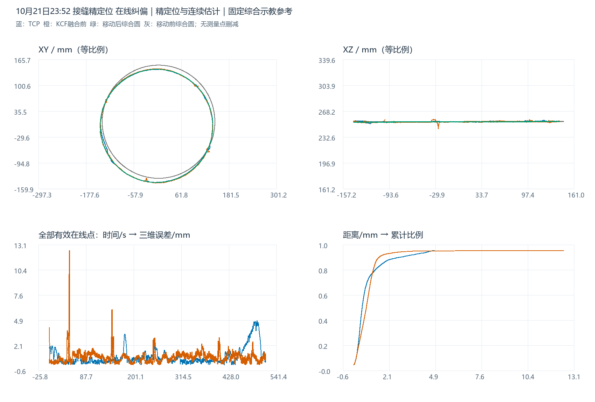
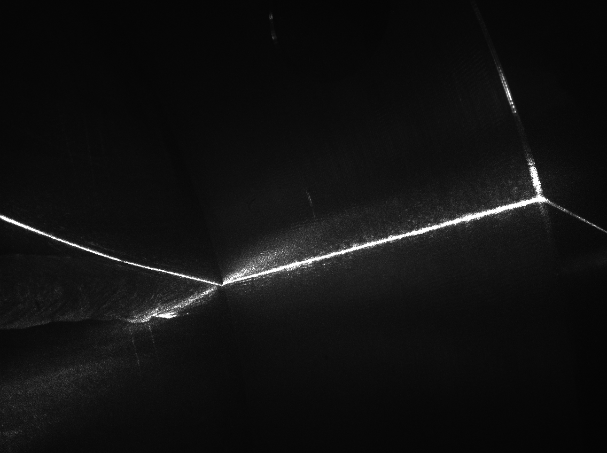
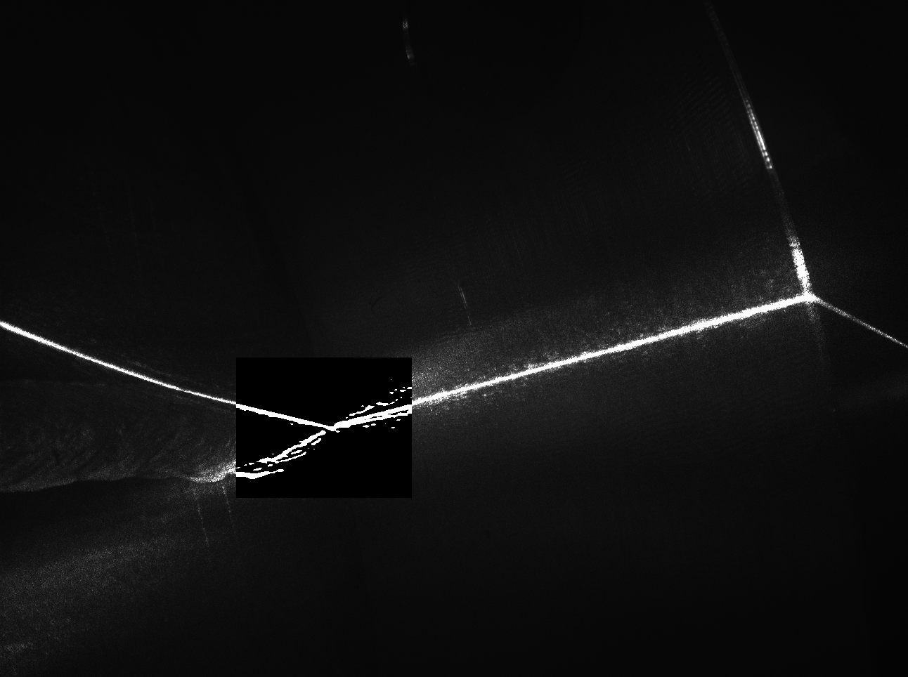
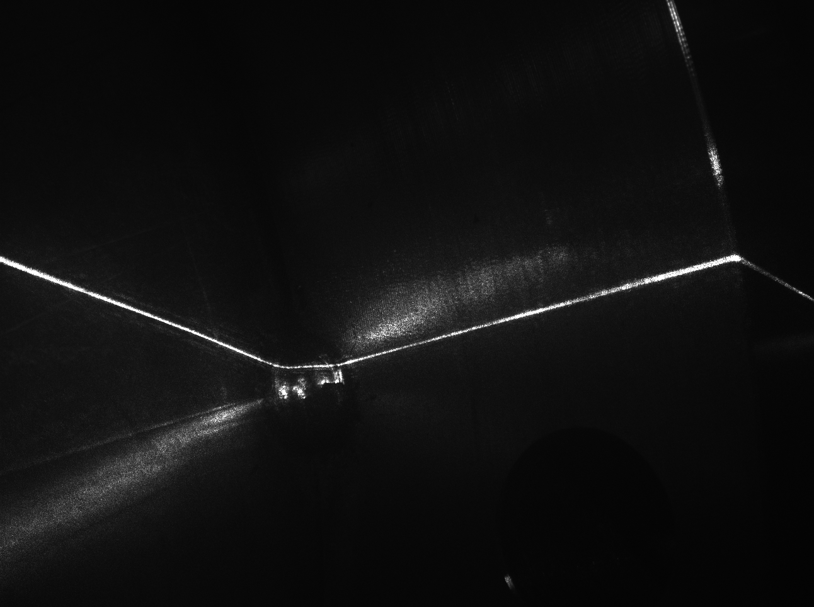
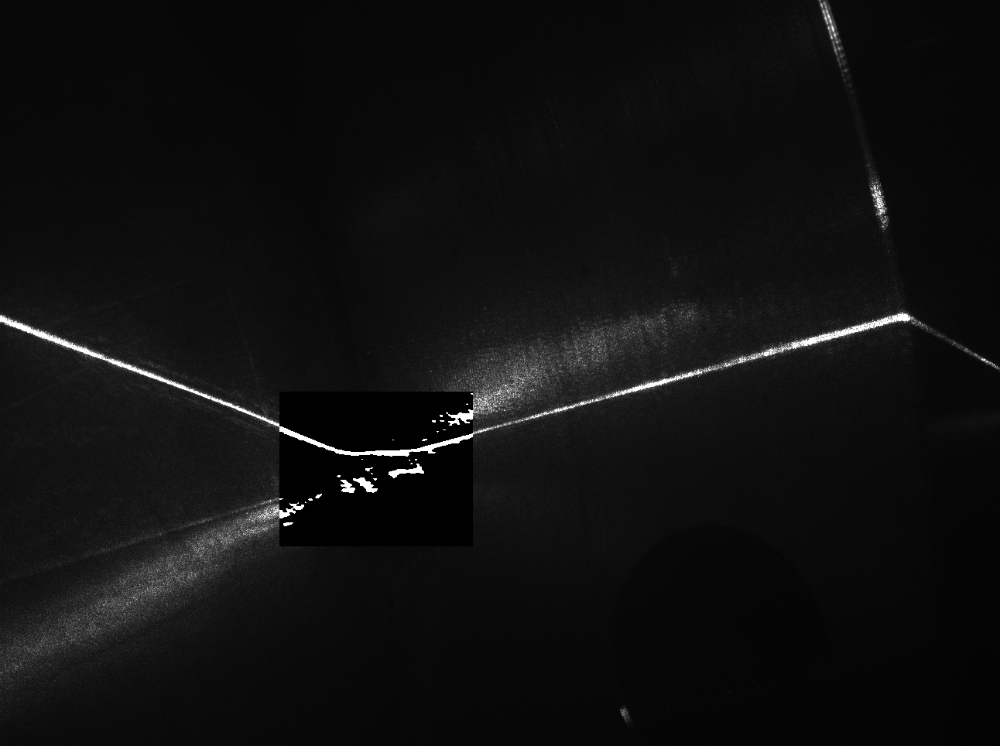

最新在线纠偏结果分析
与移动后的综合原始示教轨迹对比
运行状态：最终记录为“在线纠偏在终态前被复位”。在线记录后进入等待机器人程序停止，末条机器人记录仍S_START=1、CORFLAG=0、DETFLAG=0；不写成正常完成，也不能仅凭日志判断复位原因或复位后的实际运动。主统计排除了启动和停止等待段。
1. 固定参考、数据范围与坐标
沿用四组去重历史示教等权综合的原始圆，半径固定142.035339635 mm。只用融合前粗KCF（before_fusion）估计圆心和法线，对综合示教作刚体移动；不缩放、不用TCP或最终视觉优化参考。移动后参考为事后估计，不是独立测量的真实焊缝。新几何精定位数据不改变主参考口径。
机器人记录6697条，视觉诊断7332条。TCP筛选online_running、CORFLAG=DETFLAG=S_START=1、S_HOLD=ALARM=0，保留5854点；视觉筛选online_running且result_valid=1，保留7056点。估计来源有效输出全部保留并标识，不平滑、不删峰值。
统一到变位机末节随动/材料坐标系：TCP经RBCALIB变换并逐点消除Ry(S1)Rz(S2)，像素用同帧姿态和相机标定投影；工具TCP系转换回末节系加Z=231 mm。改变坐标原点不改变误差。当前标定复算吻合不等于历史标定独立验证。
| 状态 | 记录数 | 起始北京时间 | 末条北京时间 |
|---|---|---|---|
| idle | 147 | 10-21 23:52:25.360 | 10-21 23:52:41.097 |
| initial_detection_running | 151 | 10-21 23:52:41.185 | 10-21 23:52:57.601 |
| sending_initial_teach_points | 5 | 10-21 23:52:58.192 | 10-21 23:52:58.205 |
| waiting_initial_teach_point_ack | 4 | 10-21 23:52:58.420 | 10-21 23:52:59.123 |
| waiting_initial_approach | 89 | 10-21 23:52:59.337 | 10-21 23:53:08.900 |
| waiting_online_start | 2 | 10-21 23:53:09.002 | 10-21 23:53:09.110 |
| online_running | 5855 | 10-21 23:53:09.186 | 10-22 00:01:44.837 |
| waiting_detection_reset | 1 | 10-22 00:01:44.967 | 10-22 00:01:44.967 |
| waiting_robot_program_stop | 443 | 10-22 00:01:45.034 | 10-22 00:02:33.335 |
2. 三维轨迹、投影与XYZ偏差
蓝TCP、橙融合前粗KCF、灰虚线综合原始示教、绿移动后参考。紫色最终业务视觉可从图例开启；它包含精定位、连续性处理及估计来源，不能标成单纯卡尔曼融合后KCF。W点是历史综合圆生成点。

3. 综合原始示教来源与移动参数
| 历史示教 | W点数 | 拟合半径/mm | 综合权重 |
|---|---|---|---|
| 20230608CHUFENGKOU | 1687 | 140.6477 | 25% |
| 20250606CHUFENGKOU | 1663 | 141.6920 | 25% |
| 20260308CHUFENGKOU | 1355 | 142.0846 | 25% |
| 20260404CHUFENGKOU1 | 1368 | 143.7170 | 25% |
| 圆 | 圆心X/mm | 圆心Y/mm | 圆心Z/mm | 半径/mm | 单位法线 |
|---|---|---|---|---|---|
| 固定综合原始示教（移动前） | 4.4924 | 8.9094 | 253.9076 | 142.0353 | -0.000832582, 0.001575923, 0.999998412 |
| 移动后综合示教参考 | -0.5005 | -1.5765 | 253.5182 | 142.0353 | -0.002578998, -0.000090904, 0.999996670 |
| TCP 实际轨迹拟合圆 | -0.4933 | -1.6168 | 253.8165 | 141.6675 | -0.001833627, 0.000121488, 0.999998312 |
| KCF 原始检测拟合圆 | -0.5005 | -1.5765 | 253.5182 | 142.1938 | -0.002578998, -0.000090904, 0.999996670 |
| 最终业务视觉拟合圆 | -0.4912 | -1.6425 | 253.8080 | 141.6581 | -0.001895954, 0.000108003, 0.999998197 |
四组各25%；半径固定。圆心和法线对齐采用最小旋转，绕法线相位不由圆几何确定。各轨迹拟合圆只描述形状，不替换测量点。刚体变换保存在teach_to_current_transform.csv。
4. 主误差统计
| 轨迹 | 点数 | 平均/mm | 最大/mm | RMSE/mm | P95/mm | ≤2 mm | ≤3 mm | >3 mm点数 |
|---|---|---|---|---|---|---|---|---|
| TCP 实际轨迹 | 5854 | 0.8442 | 4.8124 | 1.2317 | 3.0666 | 91.19% | 94.81% | 304 |
| KCF 原始检测 | 7056 | 0.8261 | 12.4837 | 1.0562 | 1.6018 | 97.11% | 99.11% | 63 |
| 最终业务视觉 | 7056 | 0.7811 | 4.7672 | 1.1929 | 3.1966 | 91.55% | 94.49% | 389 |
h=(p-c)·n；ρ=||(p-c)-h·n||；e=√((ρ-R)²+h²) 平均=mean(e)；RMSE=√mean(e²)；XYZ偏差=测量点−参考圆最近点
使用连续解析三维圆最近距离；按记录样本加权，不按弧长/时间重加权。3 mm为描述阈值，不是自动认定的工艺验收线。XYZ偏差不是TCP与视觉同焊点配对误差。
5. 新版视觉链路：逐阶段与来源分组
schema4区分before_fusion（粗KCF）、coarse_final（粗融合）、geometry（原图精定位）、final（最终业务输出）。粗跟踪fusion_applied=6917/7056，不能证明所有最终输出只经历卡尔曼。下表使用同一参考和同帧子集。
| 阶段变化 | 同帧点数 | 前RMSE/mm | 后RMSE/mm | 平均空间变化/mm | 偏差减小 | 偏差增大 |
|---|---|---|---|---|---|---|
| raw_to_coarse | 7056 | 1.0562 | 1.0419 | 0.0457 | 3725 | 3192 |
| raw_to_geometry | 4159 | 0.8893 | 0.5872 | 0.8950 | 3172 | 987 |
| geometry_to_final | 4159 | 0.5872 | 0.6000 | 0.0861 | 809 | 3269 |
| raw_to_final | 7056 | 1.0562 | 1.1929 | 1.0647 | 4480 | 2576 |
raw_to_coarse：粗KCF→粗融合；raw_to_geometry：仅精定位有效的4159帧；geometry_to_final：同4159帧的精定位→最终输出；raw_to_final：全部有效帧。精定位有效子集的RMSE由粗KCF 0.889→精定位0.587→最终0.600 mm，但不能外推到退化帧。最终全量RMSE较粗KCF增加约12.94%。
| 输出来源 | 点数 | 平均/mm | RMSE/mm | 最大/mm | >3 mm点数 |
|---|---|---|---|---|---|
| Geometry | 4159 | 0.4737 | 0.6000 | 4.5811 | 21 |
| CorrectedKcf | 1904 | 0.6209 | 0.7648 | 3.8030 | 2 |
| SimulationPrediction | 993 | 2.3761 | 2.7353 | 4.7672 | 366 |
来源1=原图精定位；2=校正KCF估计；3=仿真预测估计。estimated共2897点、transition_limited共314点。不同来源覆盖不同时间位置，来源分组不是受控因果实验。
打开按来源着色的全量误差时间图。下表为持续较长的仿真预测段，跨度不包含下一帧间隔。
| 预测段开始 | 预测段结束 | 点数 | 首末跨度/ms | 最大/mm |
|---|---|---|---|---|
| 10-22 00:00:40.816 | 10-22 00:00:56.822 | 243 | 16006 | 4.7672 |
| 10-22 00:00:28.310 | 10-22 00:00:40.652 | 187 | 12342 | 2.8987 |
| 10-21 23:57:49.747 | 10-21 23:57:55.554 | 90 | 5807 | 1.2450 |
| 10-22 00:00:57.977 | 10-22 00:01:02.927 | 76 | 4950 | 4.7144 |
| 10-21 23:55:39.068 | 10-21 23:55:42.829 | 58 | 3761 | 3.8183 |
| 10-21 23:53:51.026 | 10-21 23:53:54.260 | 50 | 3234 | 0.8112 |
| 10-22 00:00:25.769 | 10-22 00:00:28.046 | 34 | 2277 | 1.6369 |
| 10-21 23:57:19.815 | 10-21 23:57:21.301 | 23 | 1486 | 1.1224 |
| 10-21 23:53:55.713 | 10-21 23:53:57.098 | 22 | 1385 | 1.7545 |
| 10-21 23:59:54.452 | 10-21 23:59:55.476 | 15 | 1024 | 1.3064 |
6. 分量、峰值与历史同口径对照
| 轨迹 | 径向有符号均值/mm | 径向RMSE/mm | 离面有符号均值/mm | 离面RMSE/mm | ΔX RMSE/mm | ΔY RMSE/mm | ΔZ RMSE/mm |
|---|---|---|---|---|---|---|---|
| TCP 实际轨迹 | -0.4940 | 1.0705 | 0.2716 | 0.6092 | 0.9696 | 0.4521 | 0.6104 |
| KCF 原始检测 | 0.1112 | 0.8792 | 0.0094 | 0.5853 | 0.5721 | 0.6675 | 0.5854 |
| 最终业务视觉 | -0.5031 | 1.0544 | 0.2928 | 0.5577 | 0.9625 | 0.4287 | 0.5592 |
| 轨迹 | 时段 | 点数 | 平均/mm | RMSE/mm | 最大/mm | >3 mm点数 |
|---|---|---|---|---|---|---|
| TCP 实际轨迹 | 前60秒 | 679 | 0.7281 | 0.9472 | 2.0767 | 0 |
| TCP 实际轨迹 | 60秒以后 | 5175 | 0.8594 | 1.2643 | 4.8124 | 304 |
| KCF 原始检测 | 前60秒 | 837 | 0.7980 | 1.5666 | 12.4837 | 42 |
| KCF 原始检测 | 60秒以后 | 6219 | 0.8299 | 0.9671 | 6.0393 | 21 |
| 最终业务视觉 | 前60秒 | 837 | 0.3883 | 0.5200 | 1.8607 | 0 |
| 最终业务视觉 | 60秒以后 | 6219 | 0.8340 | 1.2562 | 4.7672 | 389 |
| 轨迹 | 开始 | 结束 | 点数 | 最大/mm | 峰值径向/mm | 峰值离面/mm |
|---|---|---|---|---|---|---|
| KCF 原始检测 | 10-21 23:53:55.910 | 10-21 23:53:57.098 | 19 | 12.4837 | -7.8839 | -9.6792 |
| KCF 原始检测 | 10-21 23:55:38.078 | 10-21 23:55:39.001 | 14 | 6.0393 | 5.9696 | 0.9148 |
| TCP 实际轨迹 | 10-22 00:01:08.134 | 10-22 00:01:30.631 | 255 | 4.8124 | -4.6494 | 1.2421 |
| 最终业务视觉 | 10-22 00:00:42.830 | 10-22 00:01:04.016 | 322 | 4.7672 | -4.5482 | 1.4285 |
| KCF 原始检测 | 10-21 23:53:09.117 | 10-21 23:53:09.117 | 1 | 4.0783 | -1.5210 | 3.7840 |
| 最终业务视觉 | 10-21 23:55:38.605 | 10-21 23:55:43.027 | 67 | 3.8183 | 3.7190 | 0.8651 |
| KCF 原始检测 | 10-21 23:53:52.017 | 10-21 23:53:53.303 | 20 | 3.7651 | 1.1907 | 3.5719 |
| KCF 原始检测 | 10-21 23:53:53.435 | 10-21 23:53:53.501 | 2 | 3.4855 | 0.2565 | 3.4761 |
| TCP 实际轨迹 | 10-22 00:01:06.005 | 10-22 00:01:07.323 | 16 | 3.3917 | -3.0995 | 1.3773 |
| TCP 实际轨迹 | 10-21 23:56:08.312 | 10-21 23:56:10.175 | 22 | 3.3579 | 3.2752 | 0.7405 |
| KCF 原始检测 | 10-21 23:55:37.582 | 10-21 23:55:37.945 | 5 | 3.2143 | 3.0568 | 0.9937 |
| TCP 实际轨迹 | 10-22 00:01:03.081 | 10-22 00:01:03.963 | 11 | 3.1602 | -2.7019 | 1.6390 |
| KCF 原始检测 | 10-21 23:55:41.839 | 10-21 23:55:41.839 | 1 | 3.1055 | -2.4336 | -1.9292 |
| KCF 原始检测 | 10-21 23:55:39.397 | 10-21 23:55:39.397 | 1 | 3.0078 | -2.7613 | -1.1924 |
TCP峰值：10-22 00:01:24.093；粗KCF：10-21 23:53:57.032；最终视觉：10-22 00:00:56.822。相邻超3 mm记录按事件归段，超过200 ms间隔拆分。时间相近不能单独证明视觉输出导致随后TCP偏差。
| 会话 | 轨迹 | 平均/mm | RMSE/mm | 最大/mm | >3 mm点数 |
|---|---|---|---|---|---|
| 10-21 18:55 稳定保护 | TCP 实际轨迹 | 0.7376 | 0.8472 | 2.5700 | 0 |
| 10-21 18:55 稳定保护 | KCF 原始检测 | 0.7250 | 0.8578 | 3.9869 | 41 |
| 10-21 18:55 稳定保护 | 融合后视觉 | 0.7186 | 0.8485 | 3.9869 | 37 |
| 10-21 20:14 稳定保护1.0 | TCP 实际轨迹 | 0.8292 | 0.9536 | 2.7835 | 0 |
| 10-21 20:14 稳定保护1.0 | KCF 原始检测 | 0.7811 | 0.9336 | 6.5737 | 55 |
| 10-21 20:14 稳定保护1.0 | 融合后视觉 | 0.7810 | 0.9283 | 6.4393 | 46 |
| 10-21 23:52 本轮精定位 | TCP 实际轨迹 | 0.8442 | 1.2317 | 4.8124 | 304 |
| 10-21 23:52 本轮精定位 | KCF 原始检测 | 0.8261 | 1.0562 | 12.4837 | 63 |
| 10-21 23:52 本轮精定位 | 最终业务视觉 | 0.7811 | 1.1929 | 4.7672 | 389 |
比20:14组，TCP平均0.829→0.844 mm、RMSE 0.954→1.232 mm、最大2.784→4.812 mm。各组分别用本组粗KCF定位同一综合参考；工件、算法和运行状态未受控，不作单因素归因。
7. 在线局部表面ICP证据
| 局部候选 | 候选通过 | 写回记录 | 后验记录 | 新帧后验成功 | 回滚标志 |
|---|---|---|---|---|---|
| 52 | 24 | 19 | 19 | 19 | 0 |
局部归档：20261021_155225_278_session_1（UTC式目录时间，帧时间匹配）。52候选中基础安全25通过、27拒绝；25次稳定评估中24通过、1拒绝。25次history_enforced=false，其中7次记录历史区域冲突，属于候选预测而非写回后实测退化。
24次候选通过，仅19份写回及19份独立新帧后验成功记录。差额5次不能补算成功，原因需结合事件进一步核对。回滚标志0份仅描述本目录记录。
| 后验时刻 | 成功 | 新帧确认 | 累计平移/mm | 累计旋转/度 |
|---|---|---|---|---|
| 10-21 23:56:40.117 | True | True | 10.4803 | 0.2734 |
| 10-21 23:56:45.330 | True | True | 11.1152 | 0.1551 |
| 10-21 23:57:06.318 | True | True | 11.5877 | 0.0000 |
| 10-21 23:57:26.217 | True | True | 11.3279 | 0.0483 |
| 10-21 23:57:31.530 | True | True | 11.9088 | 0.0635 |
| 10-21 23:57:42.123 | True | True | 11.5945 | 0.0157 |
| 10-21 23:58:08.556 | True | True | 7.0963 | 2.2601 |
| 10-21 23:58:32.975 | True | True | 6.6435 | 2.8812 |
| 10-21 23:58:59.409 | True | True | 7.0740 | 2.8364 |
| 10-21 23:59:09.803 | True | True | 7.2757 | 2.8382 |
| 10-21 23:59:15.777 | True | True | 7.6096 | 2.8273 |
| 10-21 23:59:32.574 | True | True | 8.3456 | 2.7124 |
| 10-22 00:00:01.679 | True | True | 9.3454 | 2.2092 |
| 10-21 23:53:18.522 | True | True | 6.5467 | 0.2834 |
| 10-21 23:54:14.027 | True | True | 7.1919 | 0.7592 |
| 10-21 23:55:01.217 | True | True | 7.3244 | 0.7408 |
| 10-21 23:55:17.419 | True | True | 8.0738 | 0.8025 |
| 10-21 23:55:55.073 | True | True | 8.8474 | 0.5902 |
| 10-21 23:56:16.819 | True | True | 9.0123 | 0.7118 |
新版局部独立观测来自原图geometry，不是粗KCF。416个不同帧重投影与归档坐标最大差1.16e-07 mm。“独立新帧”仍共享相机和标定，不是外部真值认证。
另有轨迹预测ICP 3107批、166批应用，与局部表面ICP不同；释放目标对同批待处理折线最大偏离0.433 mm，也不是TCP到参考圆误差。
8. 已保存图像
保存28对原始/增强图像。选择各峰值最近已保存图，非零时间差不称峰值同帧图，不能据邻近图确定峰值原因。
| 轨迹峰值 | 峰值时间 | 峰值/mm | 最近已保存图时间 | 图像减峰值/ms | 图像帧 |
|---|---|---|---|---|---|
| TCP 实际轨迹 | 10-22 00:01:24.093 | 4.8124 | 10-22 00:01:11.078 | -13015 | 18854 |
| KCF 原始检测 | 10-21 23:53:57.032 | 12.4837 | 10-21 23:53:55.713 | -1319 | 5661 |
| 最终业务视觉 | 10-22 00:00:56.822 | 4.7672 | 10-22 00:01:11.078 | 14256 | 18854 |




9. 敏感性、验证与建议
粗KCF周向覆盖约358.87°；交错20°扇区留出RMSE 1.092 mm。共享标定偏差仍存在，参考姿态可能吸收整体误差，不承诺绝对精度。
| 轨迹 | 留一组示教：平均范围/mm | RMSE范围/mm | 最大范围/mm |
|---|---|---|---|
| TCP 实际轨迹 | 0.777–1.175 | 1.130–1.479 | 4.273–5.261 |
| KCF 原始检测 | 0.826–1.004 | 1.050–1.247 | 12.138–12.781 |
最终像素投影与固定站系日志最大差8.79e-07 mm，末节随动系复算最大差9.26e-07 mm。输入哈希、独立标量距离、同帧比较、局部geometry及无鼠标浏览器控件分别核验。源码仅解释字段语义，缺乏当时可执行版本完整快照。
优先回查仿真预测持续退化段、原图精定位失效原因、仿真先验偏差及连续性限制；将精定位成功帧收益与退化段尾部问题分开评价。其次检查5次候选通过但缺少写回/后验的事务，以及停止等待后的复位流程。需要完整图像回放和事件日志才能进一步判断原因。
复现依次运行analyze.py、build_report.py、verify_browser.cjs、verify.py；stage_analysis.py由分析脚本调用。原始日志只读，新增文件仅在本目录。浏览器通过无鼠标DOM事件验证，未进行人工拖拽验收。